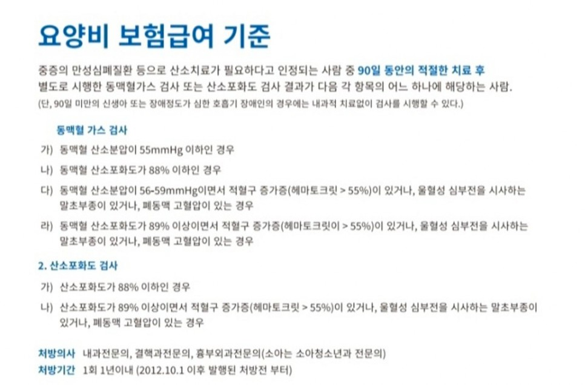

병원에서 산소치료처방전을 발급받는 방법

- 의사 상담 및 진단: 먼저 호흡기 질환 등으로 산소치료가 필요한지를 판단하기 위해 의사와 상담합니다. 의사는 환자의 증상과 검사 결과를 토대로 산소치료가 필요한지를 결정합니다.
- 진료 및 검사: 의사가 산소치료가 필요하다고 판단하면, 해당 환자에게 필요한 검사를 요청할 수 있습니다. 이는 폐기능검사(Pulmonary Function Test), 혈액 산소 포화도 측정, 기타 필요한 검사를 포함할 수 있습니다.
- 처방전 발급: 검사 결과를 토대로 산소치료가 필요하다는 판단이 확실해지면, 의사는 산소치료에 대한 처방전을 발급합니다. 이 처방전에는 산소치료에 필요한 산소 농도 및 투여 방법 등이 포함됩니다.
- 치료 계획 수립: 산소치료 처방전을 받은 환자는 병원에서 치료 계획을 수립하게 됩니다. 이는 산소치료의 빈도, 기간 등을 포함할 수 있습니다.
- 산소치료 장비 임대: 산소치료를 받기 위해 필요한 산소공급 장비를 환자가 구비해야 합니다. 산소공급업채로 문의하여 의료용 산소호흡기를 임대 할 수 있습니다.
- 치료 진행 및 추적: 산소치료를 시작한 후에는 의사의 지시에 따라 치료를 진행하고, 필요한 경우 치료의 효과를 평가하고 조정합니다.
산소치료는 의사의 처방에 따라 진행되어야 하며, 의료적인 지도 하에 진행되어야 합니다. 따라서 산소치료를 받기 위해서는 의사와의 상담 및 진단이 필수적이며, 의사의 지시에 따라 치료를 진행해야 합니다.